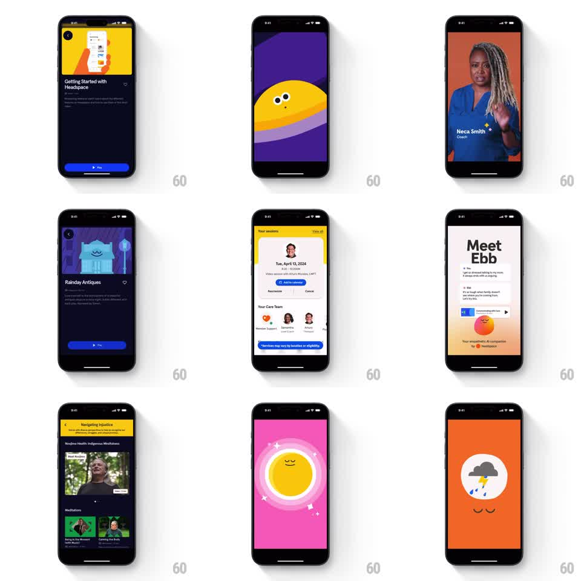

Media
Frame-by-frame

Rebuild this animation 1:1: Headspace's getting-started video - a character-driven onboarding sequence that cuts between animated scenes, coach intros, and in-app UI walkthroughs.

Rebuild this animation 1:1: Headspace's getting-started video - a character-driven onboarding sequence that cuts between animated scenes, coach intros, and in-app UI walkthroughs.
## Integration
Integration: stack-agnostic spec - springs given as stiffness/damping, timed motions as duration + curve; map every value to your framework and animation library of choice.
## Scene
A sequence of full-screen scenes: an article card with a yellow video thumbnail; a purple scene where a yellow dot character with eyes peeks over a curve; a coach intro card ("Neca Smith, Coach") over video; a purple "Rainday Antiques" article; the app's sessions/care-team UI; a "Meet Ebb" chat intro with an orange companion character; a meditations list; a pink scene with a smiling sun character; an orange scene with a rain cloud character.
## Motion spec
Pattern: montage cuts with character loops, ~2 to 3s per scene.
- Scenes hard-cut or crossfade quickly (200ms); the pace is brisk.
- Character scenes loop idle animation: the dot character's eyes dart side to side (400ms per dart), the sun's face breathes (scale 1 to 1.02, 2s), the rain cloud drips drops on a 1.5s cycle.
- UI walkthrough scenes pan slowly across the interface (2.5s drift, ease-in-out) with a soft zoom (scale 1 to 1.05).
- The coach card slides up over its video (300ms, ease-out) with the name and role fading in 100ms apart.
- Sparkle accents pop around characters on scene entry (scale 0 to 1, 200ms, staggered).
## Calibration
- Cuts carry the energy; the in-scene motion stays slow and calm - that contrast is the Headspace tone.
- Character loops never reset visibly; eyes, breaths, and drips cycle seamlessly.
## Reduced motion
Scenes crossfade with characters static.
## Don't miss
- The yellow dot character peeks from behind the purple curve - it is partially occluded, not floating on top.
- UI scenes show real product screens (sessions, care team, Ebb chat); the animation is the pan, not fake interface motion.